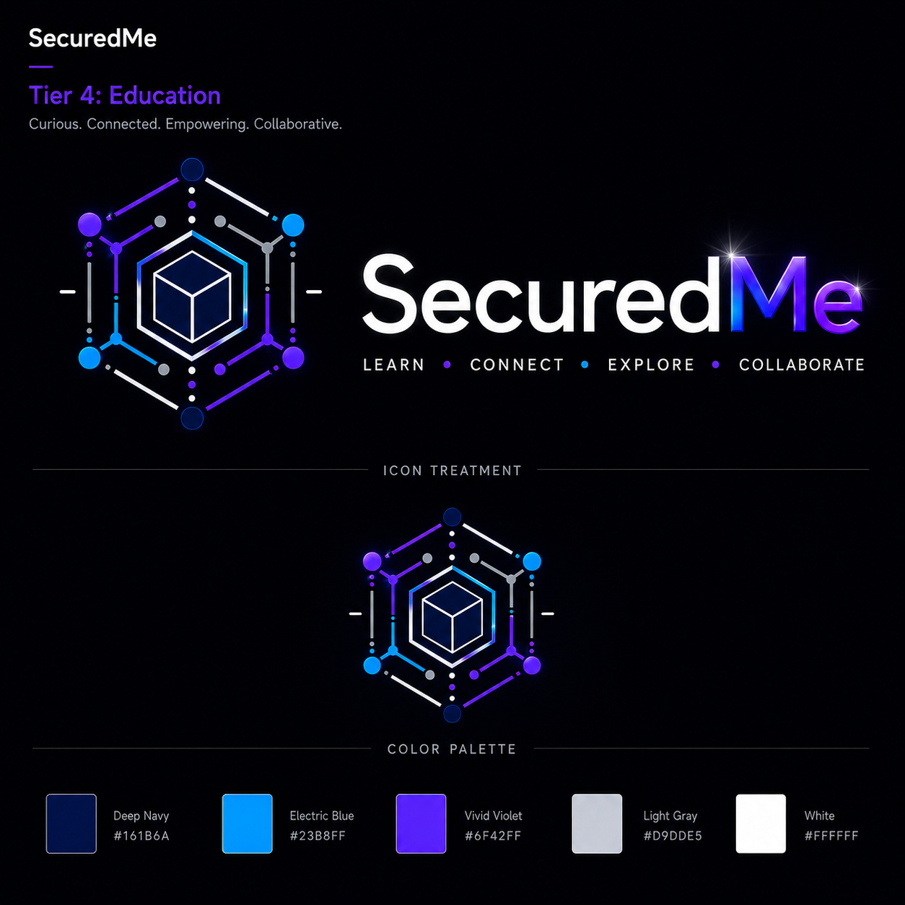
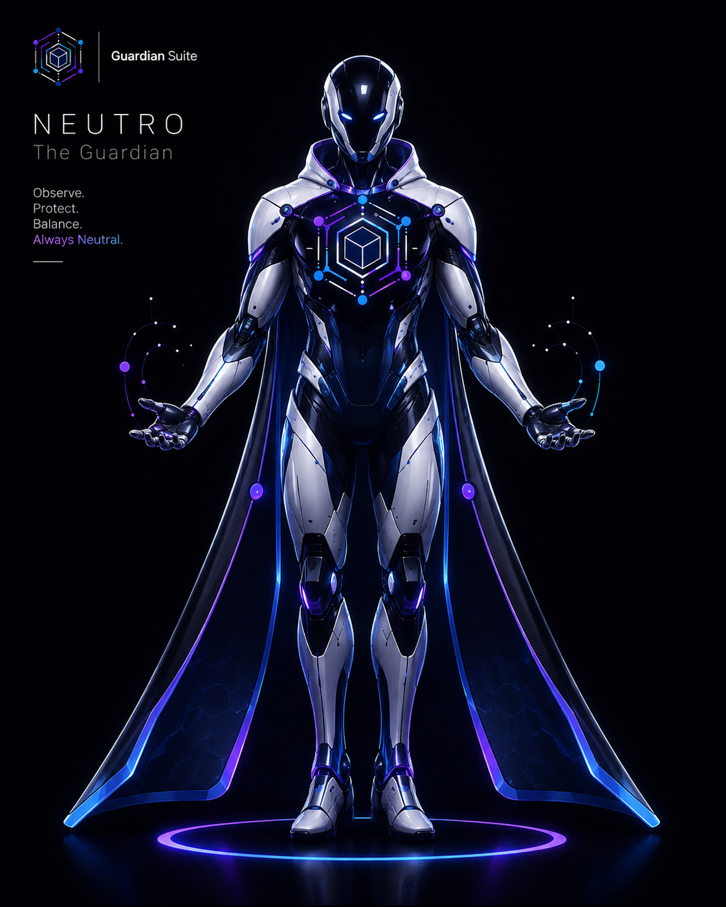
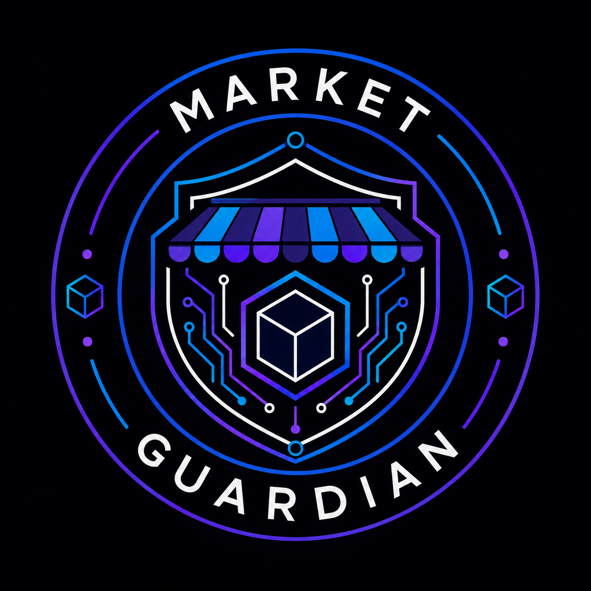

Contour
Records an object boundary without assigning identity or intent.

TIER 4 / VISUAL INTEGRITY / PUBLIC PRE-ALPHA
V.I.S Guardian converts contour, motion, saliency, occlusion, continuity and scene contradiction into metadata-only primitives. Neutro scores uncertainty; a human reviews every unresolved case.

SYNTHETIC REPLAY / REVIEW SURFACE
0.860.740.410.63dF 0.58The evidence does not reconcile. The system preserves references and asks an operator to review; it does not identify a person or claim wrongdoing.
FROM SIGNAL TO REVIEW
A temporary track_id scopes one synthetic replay without attaching a real identity.
Contour, motion, saliency, occlusion and continuity remain inspectable metadata.
Visual evidence is compared with basket, POS, inventory and cash-close references.
Contradiction produces a review-required package for a human operator.
REAL CODE SURFACE
Records an object boundary without assigning identity or intent.
Captures visual change over time across shelf, basket and checkout movement.
Marks attention pressure. It is a cue to inspect, never proof.
Records that visibility is blocked and raises uncertainty instead of guessing.
Measures whether observations belong to one anonymous temporary track.
Captures conflicts between visual, POS, inventory, basket or cash evidence.
PRIVACY / SAFETY / HUMAN AUTHORITY
V.I.S Guardian is an unstable educational pre-alpha. It uses synthetic replay and metadata-only defaults to teach evidence reconciliation while preserving human responsibility.

MARKET GUARDIAN / RETAILGUARD
LOCAL-ONLY PREFERENCES
Choose a reading profile for this browser. No account or tracking is used.
SECUREDME EDUCATION
Voluntary support helps fund the SecuredMe Education research ecosystem. It does not change evidence, review outcomes, access or product status.
Open secure PayPal supportSupport is not a charitable donation and does not produce a tax receipt.